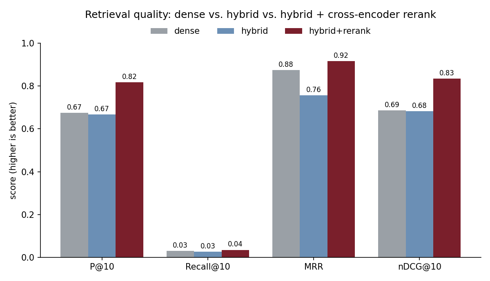
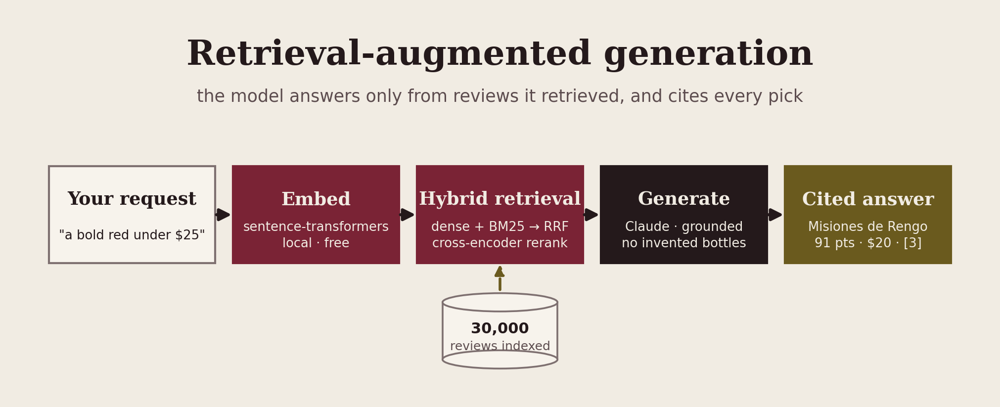

Retrieval-augmented generation over Wine Enthusiast reviews
A request such as "a bold red under $25 for a steak dinner" goes through
dense and BM25 retrieval, a cross-encoder reranker, and then Claude, which
may recommend only the reviews it was handed and cites each with
[n]. On a 12-query benchmark the reranker lifted
nDCG@10 from 0.69 to 0.83. Adding BM25 fusion without
the reranker lowered MRR from 0.88 to 0.76.
nDCG@10 from dense retrieval alone to hybrid plus cross-encoder rerank, a 21% lift.
MRR when BM25 is fused in with Reciprocal Rank Fusion and nothing reranks the result.
precision at 10, dense baseline to the full pipeline.
for retrieval. Embeddings, the Chroma index, BM25 and the reranker all run locally.
One recorded run
With a $25 price cap passed as a filter, the hybrid retriever and reranker returned four bottles from the index, and Claude led with a Chilean Carmenère. It also explained why it passed over one of the four. Every bottle, score and price in the answer comes from a retrieved review.
The request
"a bold red under $25 for a steak dinner"
--max-price 25
The pick
"a juggernaut red that cries out for steak"
Set aside: the Soos Creek, as "a touch gentler than the bold profile you're after." From the run described in writeup.md.
The measurement
src/eval.py runs three retrieval setups over twelve
requests, from "a crisp, mineral white to go with fresh oysters" to "an
affordable Argentine Malbec under $20". Each request has a written rubric
(wine family or grape, country, price cap, descriptor words), and a
review counts as relevant if it meets the rubric.
| System | P@10 | Recall@10 | MRR | nDCG@10 |
|---|---|---|---|---|
| Dense (vector only) | 0.68 | 0.030 | 0.88 | 0.69 |
| Dense + BM25 (RRF) | 0.67 | 0.026 | 0.76 | 0.68 |
| + cross-encoder rerank | 0.82 | 0.035 | 0.92 | 0.83 |
Recall@10 is low for every system because most rubrics match hundreds of reviews, and ten results can only hold ten of them. The ranking metrics are the ones that compare the systems.

eval/results.csv.What the table says
Fusing a BM25 keyword index into the dense ranking left precision about where it was and dropped MRR from 0.88 to 0.76: the first relevant wine landed lower. BM25 pulls in reviews that share words with the request but describe the wrong kind of wine, and Reciprocal Rank Fusion rewards them for appearing in one of the two lists.
The cross-encoder (ms-marco-MiniLM-L-6-v2)
reads the request and each review together and re-scores the top 80 fused
candidates. With it, precision rose to 0.82 and nDCG@10 to 0.83, both
about 21% above the dense baseline. The BM25 row stays in the table
because it is a result too.
The grounding
The system prompt tells Claude to recommend only from the retrieved
reviews, to cite each pick by its [n] index, and to say so
if none of them fit. Price, country, grape and minimum score are passed
into the vector query as metadata filters, so a $25 cap never spends a
retrieval slot on an $80 bottle. The answer prints with the reviews it
cites underneath.

Limitations
The benchmark is small, and relevance comes from keyword-and-metadata
rules, with no human judges. A rule that rewards grape and price will
favor retrievers that match on grape and price. The rules are in
src/eval.py where anyone can read them, and the comparison is
fair between systems, but the absolute numbers would need a hand-labeled
set to mean more.
The default index holds the 30,000 highest-scored reviews
(--limit 30000), not all 129,971; --all indexes
everything. The reviews come from one magazine and carry its coverage
gaps. Constraints such as price are set with CLI flags; the system does
not yet read "under twenty bucks" out of the sentence.
How it was built
winemag-data-130k-v2 Wine Enthusiast dataset, de-duplicated; 30,000 reviews indexed by defaultall-MiniLM-L6-v2 (384 dimensions) via sentence-transformers, on Apple MPS, CUDA or CPUrank-bm25), fused with Reciprocal Rank Fusionms-marco-MiniLM-L-6-v2 over the fused shortlist (60 candidates by default, 80 in the benchmark)ANTHROPIC_API_KEY switches to the APIpython -m src.eval: P@10, Recall@10, MRR, nDCG@10 on 12 rubric-labeled queries